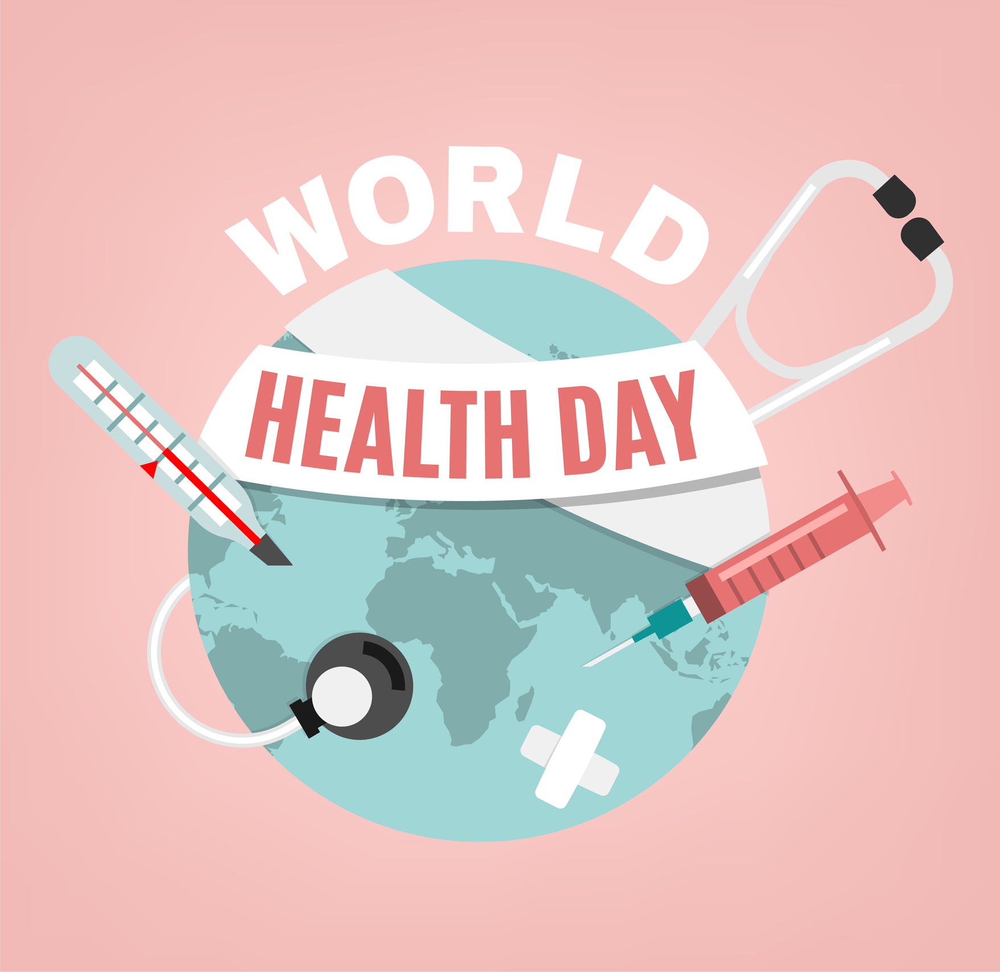

Every April 7, the World Health Organization chooses to highlight a special theme current in the wellness and medical world. Ranging from mental health to insurance and everything in between, this day sets the tone for what’s to come in the world stage. This year’s World Health Day will shine a light on nurses and midwives, the on-the-call, restless workforce that revolutionized the healthcare industry as we know it today.
The unparalleled value of good health is celebrated on World Health Day on April 7. Spearheaded by the World Health Organization (WHO), physical, mental, and emotional well-being is promoted and celebrated all over the world on this day.
To talk about World Health Day, we need to talk about the creation of the World Health Organization as a whole. In December 1945, officials of Brazil and China proposed the creation of an international health organization, that is all-encompassing and absolutely independent from any government powers.
Half a year later, in New York, in July 1946, the constitution of the World Health Organization was approved. Said constitution entered into force on April 7, 1948, as 61 countries signed in agreement for the inception of the NGO
As one of the first official acts of WHO, they created the celebration of World Health Day. It was first observed on July 22, 1949, but the date was later changed to April 7, the establishment of WHO, to encourage student participation
Since 1950, the Worth Health Day uses a different theme and theme each year selected by the current WHO Director-General, based on the suggestions of the member governments and staff. World Health Day provides a global opportunity to focus attention on important public health issues that affect the international community. On the occasion of World Health Day, promotional programs are launched that continue for a long time after April 7.
World Health Day 2020 will shine a light on the vital role played by nurses and midwives in providing health care around the world, where advocacy events will be held around the world, including the launch of the first-ever State of the World’s Nursing Report, which will provide planning to optimize the contributions of the nursery workforce, with a similar report on the Midwifery workforce to be done in 2021.
Eating a healthy diet can improve your overall health, help you maintain a healthy weight, and boost your immune system.
Staying hydrated doesn’t just help with your overall health, but it also improves concentration and curbs food cravings. Make a habit of taking water with you everywhere you go. Water helps keep the body clean, transport vitamins and nutrients.
Sleep is often low on the list in our nonstop society, but it's a must for good health. Chronic sleep deprivation raises the odds for heart disease, diabetes, stroke, obesity, and many other sicknesses. Getting your ZZZs also helps keep you safe. The suggested amount of sleep for college-age students is 7-9 hours a night, but chances are you aren’t getting enough sleep. Set a sleep schedule. Do whatever you need to do to get the right amount of sleep each night.
It's one of the easiest and most effective ways to avoid catching whatever contagious bugs are going around. The key is to be thorough: After you lather up with soap, scrub your palms, the backs of your hands, between your fingers, and under your nails for at least 20 seconds. That's about how long it should take you to sing "Happy Birthday" twice.
That's the physical activity guidelines in a nutshell. While at least 150 minutes a week of moderate exercise is ideal, experts say that any movement is better than nothing. So make it a point to stand up more often and stretch, park a bit farther from your destination for extra steps, and explore new pastimes that will help put you in motion.